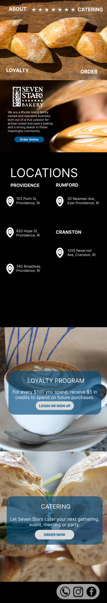

Responsive Redesign
Seven Stars Bakery
Part 1: Identifying Usability Problems
I started by identifying problems with the existing Seven Stars Bakery Website. I found significant issues with its usability, learnability, memorability, layout, and aesthics. Specifically, I found the following issues:
- It looks outdated and has too much going on—there is no attention grabber
- The texture in the menu bar paired with solid colors in the body contribute to its outdated nature
- More than one picture is pixelated
- There is no reading path that makes sense
- There is inconsistency with elements i.e. “Pumpkin Spice Lattes Are Back!” isn’t a button, while the other cards are. Additionally, the cards that are buttons themselves aren’t all formatted the same
Next, I ran the website through WebAIM WAIVE to detect accessibility problems. It found 3 images were missing alternative text, a contrast error with the white page in the middle of the page, and 30 alerts for broken or redundant links. I agree with the detected problems, and believe all of these problems are very solvable and would significantly improve accessibility.
Part 2: Visual Redesign
Based on the problems described above, I created low-fidelity wireframes, a visual design style guide, and high-fidelity prototypes.
Low-Fidelity Wireframes: Mobile, Tablet, & Desktop
Key Annotations
These wireframes address the problems described in part 1 by simplifyiing the website in the following ways:
- The new website is made up of 6 sections: the header, about, locations, loyalty, catering, and the footer
- Each section has a clear and aestehtic background image or a simple black color
- All of the repetitive text and links have been removed
- There is a clear top down reading path with consistency built into each section
Visual Design Style Guide
Before moving onto a more detailed prototype, I created the following style guide:
High-Fidelity Prototyping
Using Figma, I created 3 high-fidelity prototypes (for mobile, tablet, and desktop).
Mobile:

Tablet:
Desktop:

Key Annotations:
General Styling
- Set border-box (box-sizing: border-box).
- Get rid of default margins (margins: 0).
- Media elements are repalaced elements which have a width based on the media, to prevent media from expanding beyond its container, and take up a row (display: block; max-width: 100%).
Elements
- Use flexbox for each element (see bracket to the left) because it provides a more efficient way to lay out, align and distribute space among items in a container.
- Each prototype webpage (iPhone, iPad, Laptop) contains seven elements.
- Each element will contain a background image, and will also contain a combination of text, another image, and/or a button.
Size Adjustments
- Use view width and view height for elements that need major resizing when shown on mobile vs. tablet vs. desktop.
User Interactions
- If a user clicks a button for “Order Now”, they will be brought to the online ordering POS system that Seven Stars Bakery uses.
- If a user clicks the button for logging in / signing up for the Loyalty program, they will be directed to the same POS system that takes care of rewards.
- If a user clicks any of the social media links, they will be brought to the corresponding links.
Part 3: Responsive Redesign
Using the high-fidelity prototypes, I created the website linked above!